Обзор
В следующей документации вы узнаете, как настроить сетку с правильным шейдером в 3ds Max и как экспортировать этот ассет. Когда вы начнете работать с движком, этот документ объяснит, как назначать материалы, текстуры и на что обратить внимание. Этот документ также будет содержать ссылку на то, как правильно использовать физически основанные шейдеры. Пожалуйста, прочитайте это внимательно, так как вся игра и ее внешний вид будут основаны на этой концепции.
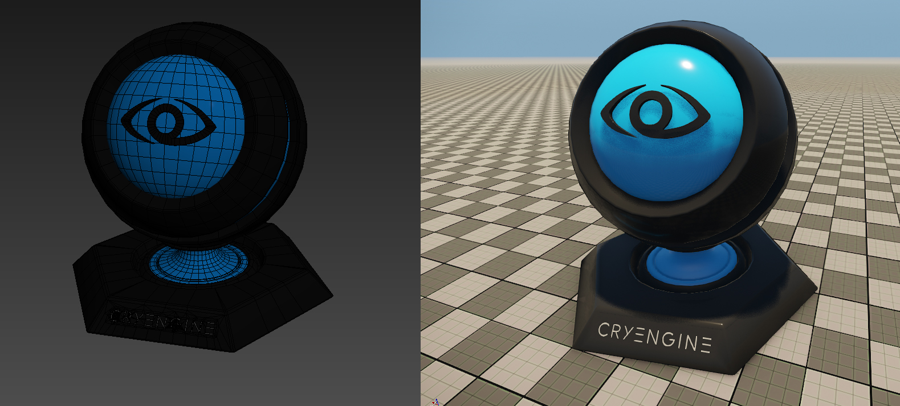
Учебные файлы
Исходная сцена 3ds Max с экспортированными файлами CRYENGINE:
Полезная информация
При работе над активом обязательно помните о следующих вещах:
- Поворот объекта в 3ds Max соответствует повороту объекта в движке.
- Убедитесь, что объекту назначены группы сглаживания. Движок назначит группу сглаживания для всех полигонов, у которых она отсутствует, что обычно приводит к нежелательным визуальным результатам.
- Убедитесь, что объект имеет сопоставление UVW.
- Вы можете оставить на объекте любые стеки модификаторов, поскольку они не повлияют на экспорт, и объект появится в движке таким, каким вы его видите в 3ds Max.
- Чем больше полигонов имеет объект, тем больше времени потребуется на его экспорт; хотя время экспорта обычно очень быстрое. (Менее 1 секунды).
- Объект должен представлять собой либо редактируемый полигон, либо редактируемую сетку.
- CRYENGINE использует метрическую систему измерения расстояний, поэтому ее также следует использовать в вашем программном обеспечении.
Начальная настройка
Для этого урока ресурс был создан в следующей папке:
<GameFolder>\Objects\tutorial\material_sphere
Для начала сохраните сцену 3ds Max в этом месте.
Все экспортированные ресурсы также будут сохранены в этой папке.
Прежде чем работать со сценой, мы должны убедиться, что у нас есть правильные настройки. Для лучшего обзора мы настроим несколько слоев.
В 3ds Max очень легко настроить слой, и он поможет поддерживать чистоту сцены и экспортировать из нее нужные объекты. Это также поможет скрыть то, что мы не хотим видеть (например, прокси, тестовую геометрию и т. д.).
В 3ds Max нажмите на верхней вкладке иконку с названием Управление слоями. Откроется новое окно, Редактор слоев. По умолчанию у вас там будет слой по умолчанию. Этот слой нельзя удалить, поэтому вам придется оставить его и добавить другие слои. Чтобы добавить еще один слой, в редакторе слоев, нажмите на Создать новый слой значок. Чтобы изменить его имя, щелкните его правой кнопкой мыши и прокрутите до Переименовать слой.
Помимо слоя по умолчанию, yу тебя должно быть как минимум еще три слоя в редакторе слоев:
- Лод
- сетка
- прокси
Простая структура слоев в сцене 3ds Max 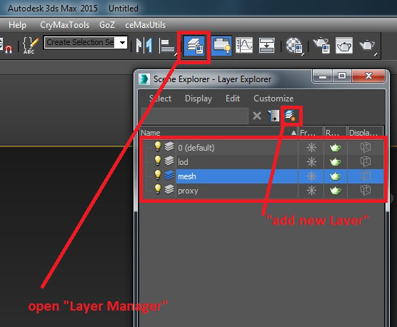
Настройка сетки в 3ds Max
Загрузите файл руководства или откройте свой собственный ресурс и сохраните сцену 3ds Max в этом месте.
<GameFolder>\Objects\tutorial\material_sphere
Компоненты актива
Сцена содержит сетку материальной сферы, 2 LOD и один физический прокси. Мы хотим показать процесс экспорта игрового ресурса в движок. В большинстве случаев активы будут иметь более одного материала ID, они будут использовать LOD (сетки уровня детализации) и сетку физического прокси для обнаружения попаданий или возможности взаимодействия с игроком или игровой средой.
- Основная сетка (LOD0)
- ЛОД1
- ЛОД2
- Физический прокси
Обзор узлов, составляющих ресурс CRYENGINE 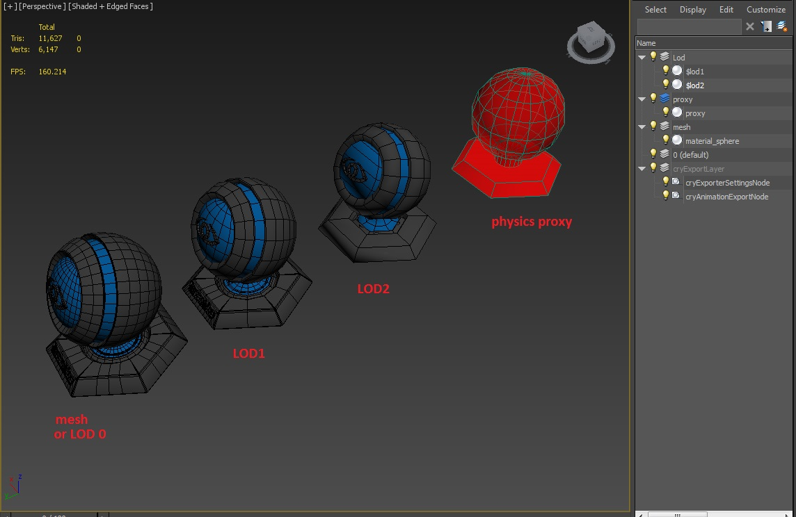
В финальной сцене все сетки должны иметь одну и ту же точку поворота, расположенную в точке (0,0,0), наложенную друг на друга:
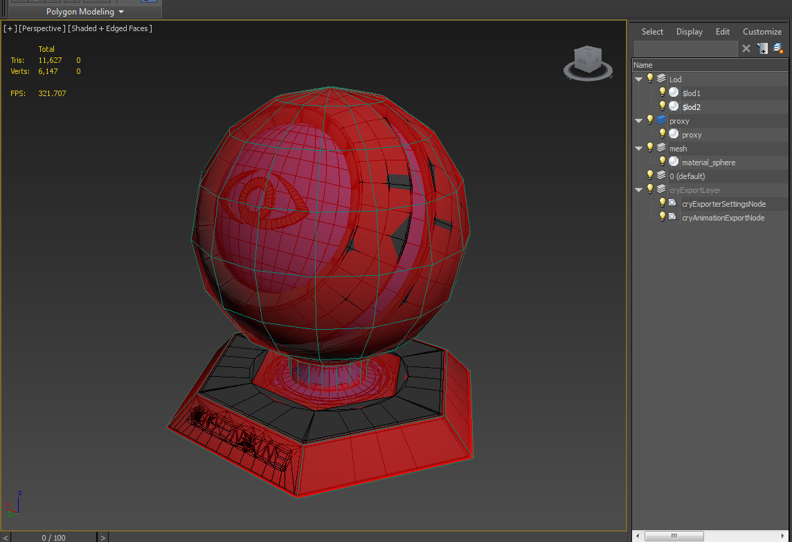
Экспортировать ресурс можно и без этой расширенной настройки, но это не рекомендуется. Мы рассмотрим это позже в разделе «Экспорт в CRYENGINE» этого руководства.
LOD Геометрия
Для LOD мы используем специальное соглашение об именах. Мы ставим перед нашими LODами префикс $LOD следующим образом:
- $LOD1_my_object
- $LOD2_my_object
- $LOD3_my_object
- и т. д.
CRYENGINE автоматически обрабатывает эти сетки как уровни детализации из-за системы нумерации в названии, он будет использовать необходимую сетку на соответствующем расстоянии.
Прокси-геометрия
Практически все объекты, экспортированные в движок, должны содержать прокси-сетку физики. Есть очень мало случаев, когда это не требуется (отдаленная фоновая геометрия, до которой игрок никогда не доберется, или маленькие камешки/камни, которые настолько малы, что они не потребуются).
Опять же, причина, по которой у нас есть отдельная геометрия, заключается в том, что мы хотим максимально упростить сетку. Чем меньше полигонов в физическом прокси, тем эффективнее физическая система может использовать объект. Таким образом, использование видимой сетки в качестве прокси (обычно с большим количеством полигонов) не будет очень эффективным в физической системе. Вот почему мы выделяем его на собственную геометрию.
Ниже вы можете увидеть геометрию упрощенной физики (красная) по сравнению с основной видимой сеткой (обратите внимание на базовую видимую сетку с более высокой полигональной структурой синего/серого цвета).
Связывание узлов в 3ds Max
Следующий шаг — связать узлы с корневой сеткой, в данном случае с сеткой материальной сферы. Перейдите к схематическому виду в 3ds Max и выберите оба уровня детализации. Перейдите к значку инструмента «Связь» и свяжите эти два уровня детализации с основной сеткой (сеткой материальной сферы).
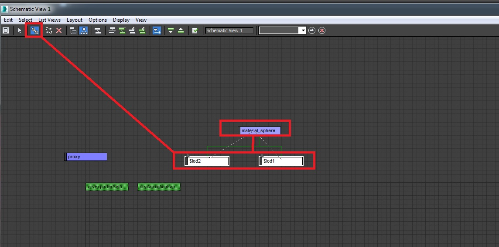
Последнее, что нам нужно сделать, это связать физический прокси с основной сеткой. Продолжая работать на схематическом виде, выберите collision_mesh node и свяжите его с сеткой сферы корневого материала.
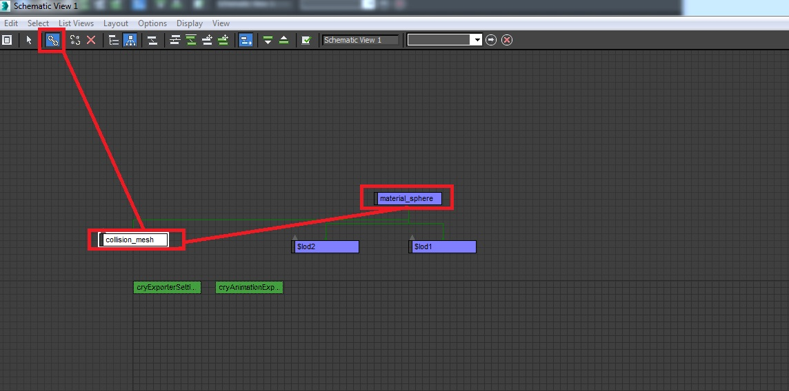
Теперь мы готовы настроить наши материалы.
Настройка материала в 3ds Max
Для этого объекта нам нужен материал Multi/Sub-Object с тремя SubID: первый будет нашим прокси-материалом, второй — темно-серым пластиком для внешней стороны, третий — голубым пластиком в середине и на платформе.
- ID1: Прокси
- ID2: снаружи (серый)
- ID3: Внутри (синий)
Настройка материала SubID 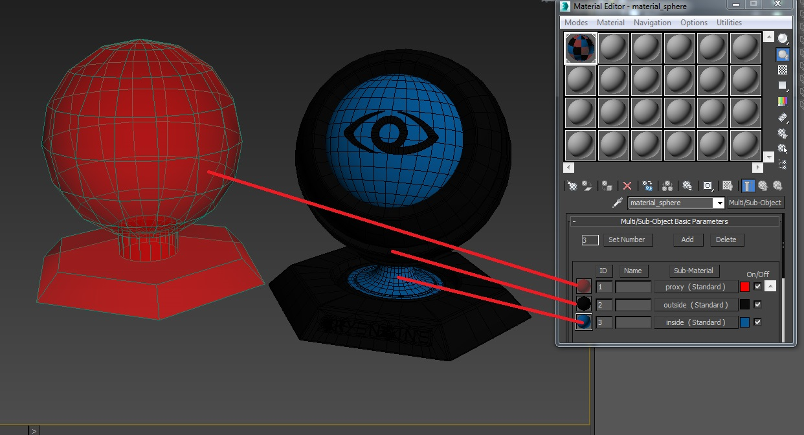
Настройте материал мульти/подобъекта
Откройте Material Editor в 3ds Max.
Выберите новый материал, щелкните слот «Стандартный», а затем измените тип материала на «Мульти/Подобъект». Установите количество подматериалов на 3 (сумма, необходимая для этого актива). Движок поддерживает до 32 субматериалов.
Преобразование материала в материал из нескольких/подобъектов 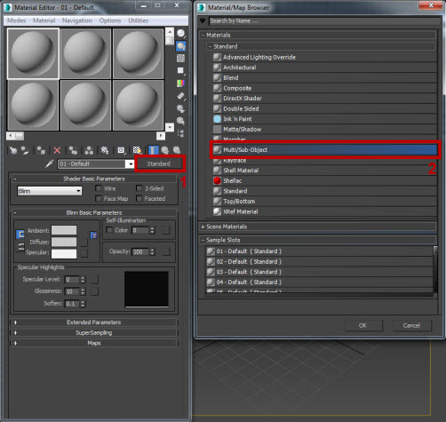
Убедитесь, что все материалы SubIDs установлены как Стандартный (не «Мульти/Подобъект») и дайте материалу и всем подматериалам конкретное имя, отражающее его назначение (например: прокси). Когда вы создадите файл материала, эти имена будут перенесены в CRYENGINE.
Назовите материал «material_sphere».
Обязательно удалите неиспользуемые слоты, поскольку это увеличит размер файла, а также снизит производительность игры, поскольку ей необходимо обрабатывать больше данных.
Настройка подматериала (обзор)
Откройте каждый подматериал и в Основные параметры шейдера раздел измените тип шейдера на Крайтек Шейдер. Для объектов следует использовать только шейдер Crytek. Другие типы шейдеров не будут работать корректно при экспорте.
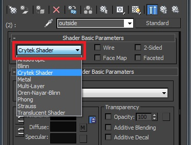
Вы увидите новый раскрывающийся список рядом с Физическая реализация. Этот список содержит пресеты взаимодействия материала в движке. На данный момент вам нужно беспокоиться только о двух из них: По умолчанию и Физический прокси (NoDraw).
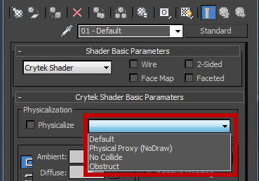
- По умолчанию это обычный материал. Вы будете использовать это для «видимого» SubIDs материала. Никаких особых свойств у него нет.
- Физический прокси (NoDraw) — это специальное свойство материала, которое вы используете для сокрытия прокси-геометрии. Его следует использовать вместе с физическим флажком.
SubID 1 — Физический прокси (коллизия)
Первый подматериал должен быть физическим прокси-материалом для сетки столкновений.
- Перейдите к этому подматериалу и измените тип физикализации на Физический прокси (NoDraw). Это приведет к тому, что геометрия не будет отображаться в движке.
- Отметьте Физически флажок. Это физикализует материал в двигателе.
Физическая реализация прокси-материала SubID 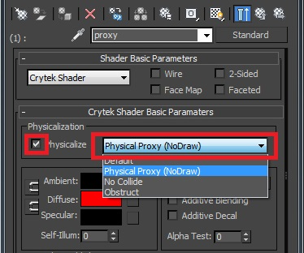
Совет по рабочему процессу: раскрасьте прокси-геометрию в красный цвет с непрозрачностью 50%. Это помогает идентифицировать прокси-геометрию отдельно от видимой геометрии. Это не обязательно, но полезно при работе со сценой.
Пожалуйста, не забудьте создать свой физический прокси, чтобы использовать (если возможно) примитивную геометрию, а в тех случаях, когда вы не можете добиться этого с помощью примитивов, используйте очень низкую геометрию и будьте осторожны (например, если ваш персонаж не будет соприкасаться с вершиной высокой водонапорной башни, там не требуется никакого прокси, поэтому вы можете пропустить его добавление).
Ресурсы также могут поддерживать несколько прокси-геометрий, которые вы можете использовать, чтобы разбить свою модель на более простые примитивные формы. Взяв эту модель в качестве примера, мы могли бы разбить этот объект на три отдельных прокси:
- толстый цилиндр short для основы
- тонкий цилиндр для подставки
- сфера для основного шара
Убедитесь, что каждый из этих прокси имеет точку поворота, соответствующую основной сетке (координаты 0,0,0).
SubID 2 и 3 — видимые сетки
Следующие SubIDs в этом материале относятся к двум видимым сеткам: серой внешней оболочке и внутренней синей поверхности.
Настройка материала здесь немного отличается: мы используем шейдер Crytek, как и раньше, затем выбираем По умолчанию из раскрывающегося списка. Обратите внимание: на этот раз мы не проверяя флажок для Физически здесь, поскольку эта опция предназначена только для прокси-сервера коллизий.
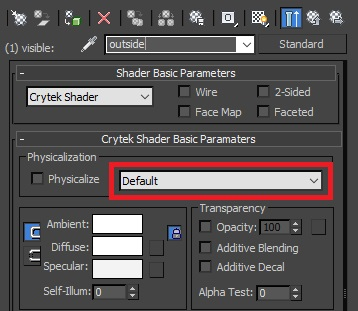
Экспорт в движок — модель
Прежде чем экспортировать ресурс в CRYENGINE, нам необходимо double убедиться, что мы сохранили его в правильной папке и с правильными соглашениями об именах. Для корректной работы сохраните все окончательные текстуры и очищенный файл 3ds Max в одну папку.
Чтобы экспортировать ресурс, нажмите кнопку Утилиты Кнопку (значок с молотком) и наконец нажмите на CRYENGINE Экспортер.
Если у вас нет CRYENGINE Exporter в вашем списке утилит, пожалуйста, прочтите здесь как установить необходимые инструменты и средства экспорта CRYENGINE.
В главном окне просмотра выберите сетку, в данном случае сетку material_sphere, и нажмите Добавить выбранное в CRYENGINE Экспортер и он добавит актив в список экспорта.
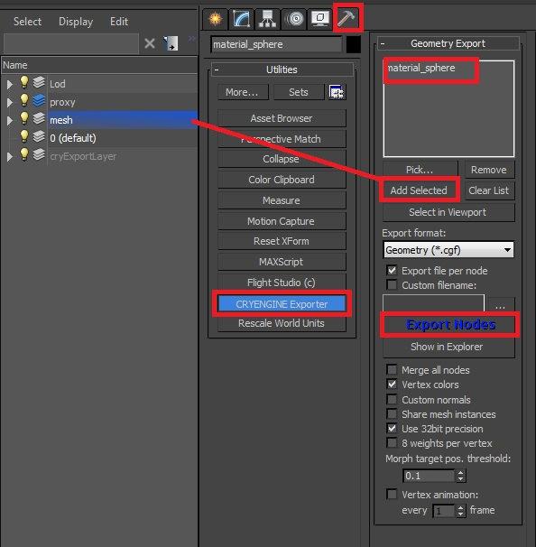
Пожалуйста, убедитесь, что флажок Экспортировать файл на узел отмечен, так как в противном случае все узлы сцены будут экспортированы в один файл (пример: если у вас есть здание, сделанное из разные части и вы хотите экспортировать их отдельно, а не как один большой объект, убедитесь, что Экспортировать файл на узел проверено).
Наконец нажмите Экспорт узлов чтобы экспортировать элементы, которые вы добавили в список экспорта ранее (material_sphere). Экспортер автоматически поместит файл *.cfg в ту же папку, в которой была сохранена сцена.
После этого нам все еще нужно экспортировать материал, поскольку единственное, что было экспортировано, — это геометрия, а не настроенный материал.
Экспорт в Engine — Материал
В CRYENGINE экспортер есть Материал раздел. Здесь мы будем создавать наш материал. Убедитесь, что вы сейчас находитесь на родительском или корневом уровне материала, а не внутри SubID.
Выберите материал Multi/Sub-Object в 3ds Max Material Editor и в средстве экспорта CRYENGINE нажмите Создать материал.
Экспорт выбранного материала из 3ds Max 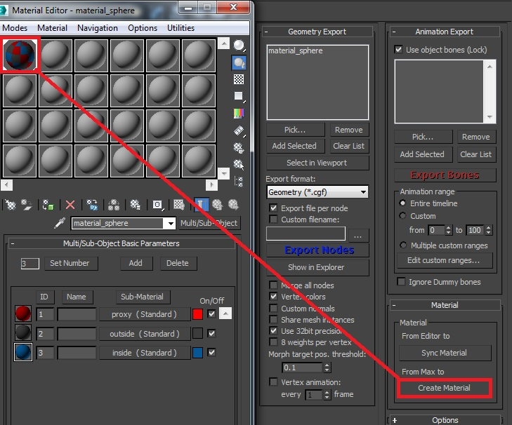
Material Editor откроется вместе с Сохранить как диалоговое окно. Вам будет предложено ввести имя нового файла *.mtl.
Убедитесь, что введенное вами имя точно такой же как название материала в 3ds Max. Для удобства материал будет экспортирован в ту же папку, в которую была экспортирована сетка. Пожалуйста, храните вашу модель *.cgf и ваш материал *.mtl в одном и том же месте, иначе вы получите текстуру ReplaceMe по всему объекту, потому что движок ожидает определенное имя файла, которое вы не указали. (в данном случае material_sphere).
Сохраняем файл материала. Обязательно сохраните его в том же месте, что и актив. 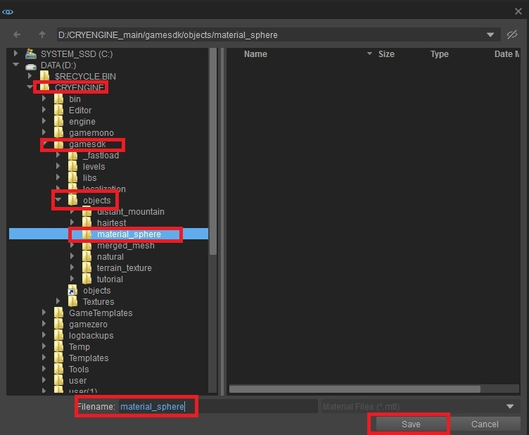
Тестирование в CRYENGINE
Открыв редактор CRYENGINE Sandbox, откройте существующий уровень или создайте новый уровень.
Как только уровень откроется, перейдите к Создать объект -> Кисть.
Чтобы найти наш актив, мы вводим имя, которое он был экспортирован, как в поле «Поиск», или вы можете перейти по папкам к местоположению ресурсов.
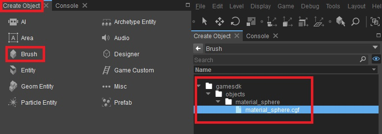
Вы найдете свой актив в gamesdk\objects\material_sphere\ папку (если вы точно следовали нашим местам сохранения). Если вы не можете найти экспортированный ресурс в списке браузера, снова щелкните верхнюю папку и дайте движку обновиться.
Перетащите актив на сцену.
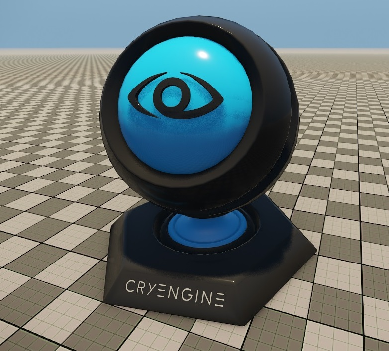
Если вы по-прежнему не можете найти свой ресурс в папке с игрой, проверьте журнал экспорта в средстве экспорта CRYENGINE внутри 3ds Max, чтобы узнать, что могло пойти не так во время экспорта.
Показать кнопку журнала в CRYENGINE Exporter 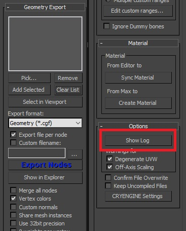
Наиболее распространенные ошибки экспорта из 3ds Max
Есть несколько распространенных ошибок экспорта, которые можно исправить. Чтобы узнать, что это такое и как их исправить, см.: Распространенные ошибки экспорта 3ds Max.
Синхронизация материалов с 3ds Max
Если вы уже создавали материал ранее и вносили в него изменения в редакторе CRYENGINE Sandbox, вы можете синхронизировать эти изменения обратно в 3ds Max, нажав кнопку Синхронизировать материал кнопка.
Чтобы использовать эту функцию:
- Выберите материал, который вы хотите синхронизировать обратно с 3ds Max в Sandbox Material Editor.
- Затем вернитесь в 3ds Max и нажмите Синхронизировать материал.
- Затем вам будет задано несколько вопросов о поиске материала в сцене и путях к локальным файлам.
- Нажмите OK и синхронизируйте выбранный материал обратно с 3ds Max Material Editor
Эта операция синхронизирует материал из CRYENGINE обратно в 3ds Max и выделенный слот материала в 3ds Max Material Editor. Будьте осторожны, чтобы не перезаписать существующие настройки материала в 3ds Max, которые вам нужны. Обязательно выполните синхронизацию с правильным материалом или выберите неиспользуемый слот для синхронизации в 3ds Max.
Также обязательно проверьте пути к картам текстур. Иногда они могут возвращать полный путь, например: C:\CRYENGINE\GameSDK\Objects\...
Физически основанные шейдеры
На следующей странице вы найдете дополнительную информацию о том, как правильно использовать физически основанные шейдеры: Физически обоснованное затенение (PBS).